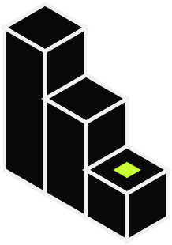
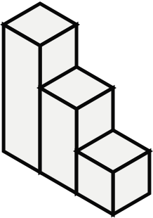
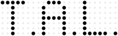

Empilhando o nome completo, a primeira coluna lê T · A · L de cima para baixo — como nos cruzamentos de palavras de Gerstner. O nome inteiro e a sigla vivem na mesma forma.
O único lime é o ponto final: o sinal de “concluído”. A versão curta mantém só a coluna de iniciais.

Os blocos são as três camadas dos produtos T.A.L.: ENGINEERING ao fundo, ADVANCED no meio, ESSENTIAL na frente — mais simples, mais perto de quem usa.
O sinal lime fica no bloco da frente: o que o usuário vê primeiro. Desenho só de linhas, com espessura única.


As letras são desenhadas com o mesmo ponto que separa a sigla — o ponto deixa de ser pontuação e vira o material da marca. A grade apagada ao fundo lembra um painel de instrumento.
Os três pontos finais são lime: três sinais acesos. Funciona como sistema — o rótulo técnico em mono vira assinatura de produto.

Um emblema fechado, como o hexágono da Openlab — mas com a forma de uma área de medição: cantos de enquadramento e réguas em milímetros nos quatro lados, com o traço maior marcando o centro.
O monograma atual fica no centro, sem mudança. É a opção mais próxima do que já existe.